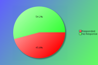
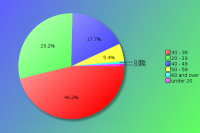
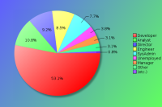
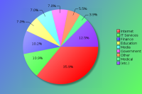
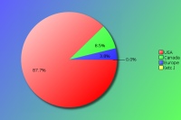

YAPC::NA 2009 - Survey Results
The following survey results are a simple presentation of the raw data.
No attempt has been made to analyse the data and compare with previous
years. See forthcoming PDFs for more in depth analysis.
Click on pie charts to view larger image version.
Demographics (required)
The demographic questions help us to understand who our attendees are. This is very useful for attracting sponsors, as we are able to re-enforce the idea that many of those attending are the kinds of people they would want to reach with their products or services. In some cases helps to encourage companies to participate in the job fairs.
Attendees:
Based on the number of people registered for the conference.

| Count | Description |
|---|
| 130 | Responded |
| 154 | No Response |
| 284 | Total |
| 45 | Response Percentage |
Age Band:

| Count | Description |
|---|
| 1 | under 20 |
| 38 | 20 - 29 |
| 60 | 30 - 39 |
| 23 | 40 - 49 |
| 7 | 50 - 59 |
| 1 | 60 and over |
Job Type:
If your position covers many roles, please base this on your most senior responsibility. Also base this on the role you perform, rather than your job title. For example, a 'QA Developer' would be a 'Developer' role, and 'Information Manager' would a Manager role (Technical or Non-Technical depending upon your responsibilites)

| Count | Description |
|---|
| 12 | CEO/Company Director/Senior Manager |
| 0 | Non-Technical Manager |
| 4 | Technical Manager |
| 14 | Technical Architect/Analyst |
| 69 | Developer |
| 11 | Engineer |
| 10 | SysAdmin |
| 0 | Student |
| 1 | Lecturer/Teacher/Trainer |
| 0 | Human Resources |
| 0 | Researcher |
| 5 | Unemployed |
| 4 | Other |
If 'Other' please enter your professional job role or title:
- Consultant
- lead engineer.
- Owner
- Release Engineer
- Software Consultant
- Sysadmin
Industry:
If you or your company undertake work within mulitple industry sectors, please select the primary one you are currently working within.

| Count | Description |
|---|
| 0 | Automotive |
| 9 | Education |
| 1 | Engineering |
| 13 | Finance |
| 9 | Government |
| 14 | IT Services |
| 46 | Internet/Web |
| 0 | Legal |
| 1 | Logistics |
| 9 | Media/Entertainment |
| 5 | Medical/Healthcare |
| 0 | Property |
| 4 | Research |
| 2 | Retail |
| 0 | Telecommunications |
| 4 | Travel |
| 4 | Unemployed |
| 7 | Other |
If 'Other' please enter your industry sector:
- Banking
- Biotechnology
- Earth Science
- Insurance
- IT Security
- non profit
- nonprofit
- Professional Service Automation
Region:
Please note this is the region you were a resident in, prior to attending the conference.

| Count | Description |
|---|
| 114 | USA |
| 11 | Canada |
| 0 | South America |
| 5 | Europe |
| 0 | Asia |
| 0 | Australaisa |
| 0 | Africa |
The Perl Community, YAPCs & Workshops
These questions are designed to help us understand our attendees level of involvement in the Perl community. Are we encouraging new people into the Perl Community, how are people getting involved with the community, can we do things better to make it easier and more exciting to be involved with the community?
How do you rate your Perl knowledge?
| Count | Description |
|---|
| 5 | Beginner |
| 54 | Intermediate |
| 70 | Advanced |
How many previous YAPCs have you attended?
| Count | Description |
|---|
| 44 | This was my first YAPC |
| 283 | YAPC::NA |
| 41 | YAPC::Europe |
| 5 | YAPC::Asia |
| 1 | YAPC::Australia / OSDC::Australia |
| 1 | YAPC::Israel / OSDC::Israel |
| 0 | YAPC::Russia |
| 0 | YAPC::SA / YAPC::Brazil |
How many Perl Workshops have you attended?
| Count | Description |
|---|
| 78 | Never attended one |
| 54 | Pittsburgh Perl Workshop |
| 11 | Frozen Perl Workshop |
| 34 | any European Perl Workshops |
| 0 | any Russian Perl Workshops |
| 13 | Other Perl Workshops |
Do you plan to attend a future YAPC/Workshop?
| Count | Description |
|---|
| 112 | Yes |
| 15 | Maybe |
| 2 | Don't Know |
| 1 | No |
If no, could you tell us why?
Particularly if this is your first YAPC, we would like to understand why you would not be able or interested in attending another event like it.
- I learn better on my own
- I think the allocation of time to certain classes was not nearly enough, and others were given too much. I think advanced classes should be given the 50 minute slots. Also, just a suggestion to the teachers, if it's at all within YAPC's control, too much time was taken up in several classes with instructors talking about why Perl is not dead and why we should use it; this to me seemed like it was implicit to the people at YAPC, and so we should have spent more time on the actual material rather than taking 10 minutes of the 20 minute sessions talking about why we should use Perl. Otherwise, it was a well done conference.
- Location and timing are the only reasons I might not go.
- The level of talks appeared unattractive to me. While my primary interest was Parrot, I do have a Perl background. But many of the talks seemed either irrelevant or trivial. (USB rocket launcher? Git is easy?)
Are you a member of a local Perl Mongers user group?
| Count | Description |
|---|
| 88 | Yes |
| 42 | No |
If not, do you plan to find one or start one?
| Count | Description |
|---|
| 6 | Yes |
| 19 | Maybe |
| 4 | Don't Know |
| 19 | No |
What other areas of the Perl Community do you contribute to?
| Count | Description |
|---|
| 70 | I'm a CPAN Author |
| 13 | I'm a CPAN Tester |
| 35 | I'm a Perl project developer (eg Rakudo, Catalyst, TAP, Padre, etc) |
| 52 | I have a technical blog (e.g. a use.perl journal or personal blog) |
| 41 | I use or contribute to PerlMonks or other Perl forums |
| 71 | I use IRC (e.g. #perl, #yapc, or #london.pm) |
| 38 | I contribute to Perl mailing lists (e.g. P5P, Perl QA, etc) |
| 12 | other ... |
If 'Other' please enter your area of contribution
- blog at work (not public)
- contribute patches
- former (and hopeful to be again) Perl instructor at Rensselaer Polytechnic Institute
- I hack on Parrot
- I organize our local Perl Mongers group
- i will do better in this reqard
- In house rabble rousing
- MojoMojo, Catalyst contributor
- organizing workshops
- Perl Foundation
- Secretary/Director of the Enlightened Perl Organisation
- TPF volunteer and provide patches to perl modules
YAPC::NA 2009
Regarding YAPC::NA 2009 in Pittsburgh specifically, please answer the following as best you can.
These questions are used to try and identify areas of the conference that did and didn't work, with the aim of giving future organisers an opportunity to improve on all aspects of the conferences experience.
When did you decide to come to this conference?
| Count | Description |
|---|
| 62 | I'm now a regular YAPC::NA attendee |
| 13 | After YAPC::NA 2008 in Chicago |
| 0 | After joining the Facebook event group |
| 14 | After seeing promotions online/in the press |
| 23 | I was nominated to attend by manager/colleague |
| 23 | I was recommended to attend by friend/colleague |
| 18 | other ... |
If 'Other' please let us know when
- after attending all the PPW events
- After figuring holiday dates at work
- After seeing PVMW announcement
- After YAPC::NA 2006 in Chicago -- first chance to attend YAPC::NA since then
- alternative to OSCON
- based on proximity
- Discovered YAPC website online
- Interested and company let us go
- it was local
- mentioned on the BioPerl mailing list
- Once they accepted some talks.
- regular YAPC attendee
- to join the Parrot workshop
- via local PM group
- When I saw it was close and was able to get time off to go
- When my manager approved the expense
- when my talks(s) were accepted :)
- When our funding was cut and I couldn't go to OSCON.
Were you a speaker?
| Count | Description |
|---|
| 74 | No |
| 19 | No, but I have spoken before at similar conferences |
| 27 | Yes, and I have spoken before at similar conferences |
| 10 | Yes, and it was my first time as a speaker |
Note that "similar conferences" includes other YAPCs, as well as Linux, Open Source or large technical events such as workshops.
If you weren't a speaker, would you consider speaking at a future conference?
| Count | Description |
|---|
| 66 | Yes |
| 10 | No |
| 18 | Ask me later |
What was your motivation for coming?
| Count | Description |
|---|
| 60 | the list of speakers |
| 68 | the quality of the talks scheduled |
| 28 | to be a speaker |
| 95 | to meet with Perl/project co-contributors |
| 100 | to socialise with Perl geeks |
| 24 | to meet Larry Wall |
| 33 | to visit Pittsburgh/America |
| 15 | other ... |
If 'Other' please let us know your motivation for coming
- cheap and close
- I always come.
- I was local, it was inexpensive and convenient to see the talks whether they were high quality or not
- networking / job finding
- Parrot workshop/hackathon
- PVMW and face time with other Parrot hackers
- recruiting at job fair
- see people I had seen at earlier YAPCs
- SQL class
- The topics of the talks scheduled
- To bring new employees
- To learn ways improve perl usage at my company
- To learn what I didn't know I didn't know
- to take courses
- work shop before, classes after
What aspects of the conference do you feel gave value for money?
| Count | Description |
|---|
| 117 | the talks / speakers |
| 3 | the conference bag |
| 43 | the tshirt |
| 8 | the job fair |
| 49 | the conference dinner |
| 54 | the conference venue |
| 37 | the city of Pittsburgh |
| 56 | the hallway track |
| 95 | the attendees |
| 5 | other ... |
If 'Other' please enter your suggestions
- BoFs
- Moose course
- Pittsburgh weather
- PVMW
- speaker's party # it's the people I want to talk to, distilled into one place
- work shop before, classes after
Did you have holiday planned around your conference attendance?
| Count | Description |
|---|
| 88 | I came just for the conference |
| 2 | several days before only |
| 10 | 1 day before only |
| 12 | several days before and after |
| 4 | 1 day after only |
| 11 | several days after only |
Were there any talks you want to see, but missed due to clashes in the schedule?
| Count | Description |
|---|
| 74 | Yes |
| 48 | No |
If 'Yes', which talks did you miss?
There are always conflicts in the schedule, as it's difficult to know what everyone would like to see. However, if you could list a few talks that you missed, it would give speakers an idea whether it would be worth updating their talks for furture events.
| Count | Description |
|---|
| 9 | chromatic - Take Advantage of Modern Perl |
| 9 | Shawn Moore - Extending Moose for Applications |
| 8 | Stevan Little - KiokuDB - A Real World Introduction |
| 8 | Yuval Kogman - What Haskell did to my brain |
| 7 | Hans Dieter Pearcey - CPAN - A big enough lever to install the world |
| 6 | Ingy döt Net - All New YAML Tools for Perl |
| 6 | Jesse Vincent - Distributed bug tracking with SD |
| 6 | Michael Schwern - Trapped In A Room With Schwern |
| 5 | Jonathan Swartz - CHI: Unified caching for Perl |
| 5 | Josh ben Jore - Effective Debugging |
| 5 | Nathan Gray - Getting the most out of TAP |
| 5 | Patrick Michaud - Perl 6 today |
| 5 | Perrin Harkins - Choosing a Web Architecture for Perl |
| 5 | Ricardo Signes - Git is Easy |
| 5 | Ricardo Signes - Validating Data Everywhere with Rx |
| 5 | Robin Darby - perl, cloud glue? |
| 4 | Devin Austin - Intro To Moose |
| 4 | Hans Dieter Pearcey - Dist::Zilla - Automating quality since 2008 |
| 4 | Jonathan Rockway - Using KiokuDB |
| 4 | Mark Keating - What is Enlightened Perl? What is the Enlightened Perl Organisation? |
| 4 | Matt S Trout - Catching a ::Std - Standardisation and best practices in the perl community |
| 4 | Stevan Little - To Moose or Not To Moose |
| 4 | Steven Lembark - Memory Manglement With Perl |
| 4 | Walt Mankowski - Getting Started with Multithreaded Perl |
| 3 | Barbie - The Statistics of CPAN |
| 3 | Brock Wilcox - Drop-In Web-Based REPL for CGI Applications |
| 3 | Brock Wilcox - WWW::HtmlUnit - Scrape and Test Javascript-Using Sites |
| 3 | Cory Watson - Moose for Managers |
| 3 | Dan Dascalescu - Debugging Catalyst Applications |
| 3 | David Moreno - Perl in the Time of Social Networks |
| 3 | Hans Dieter Pearcey - Code Reuse with Moose |
| 3 | Karen Pauley - Remote Controlled Volunteers |
| 3 | Jim Brandt - Business Process Management with Workflow.pm |
| 3 | Mike Schilli - Moving CPAN module projects to github.com |
| 3 | Patrick Michaud - Perl 6 regexes and grammars |
| 3 | Scott McWhirter - Test automation for the risk adverse |
| 3 | Steven Lembark - Utils are your Friends |
| 2 | Brad Oaks - Warming up to Modular Testing with Test::Class |
| 2 | Chip Salzenberg - Core Hacking |
| 2 | Chris Prather - XML::Toolkit: Tools to Ease the Pain |
| 2 | Christopher Nehren - CLI apps don't have to suck |
| 2 | Cory Watson - Data Visualization with Chart::Clicker |
| 2 | Dan Dascalescu - MojoMojo - the Elegant Wiki, Catalyst-powered |
| 2 | Jonathan Rockway - Web Applications in 2009 |
| 2 | Luke Closs - A8N-ing - Agile Web Testing |
| 2 | Matt S Trout - The future of DBIx::Class |
| 2 | Michael Peters - TAP in depth |
| 2 | Mike Schilli - Driving a USB Rocket Launcher from Perl in User Space |
| 2 | Nicholas Perez - Protocol abstraction through stackable POE::Filters |
| 2 | Ricardo SIGNES - I <3 Email |
| 2 | Scott Walters - Perl in Vegas |
| 2 | Tatsuhiko Miyagawa - Build a desktop application with Perl, HTTP::Engine, SQLite and jQuery |
| 2 | Todd Rinaldo - Catalyst, DBIC, and TT for world domination |
| 1 | Abigail - Test::Regexp |
| 1 | Bruce Gray - Command-line Perl |
| 1 | Chris Prather - The EPO Extended Core |
| 1 | Clinton Wolfe - Class::ReluctantORM - An ORM Your DBA can Live With |
| 1 | David Fetter - You can do THAT without Perl?!? |
| 1 | DrForr - Oops! I i18n'd your legacy app! |
| 1 | Jeff Horwitz - Using and Contributing to mod_perl6 |
| 1 | Joe Celko - The New Stuff in SQL You Don't Know About |
| 1 | Leonard Miller - Object oriented perl -- everything you were too embarrassed to ask. |
| 1 | Leonard Miller - Things you can do to stop being a n00b |
| 1 | Michael Peters - Continuous Integration Testing in Perl |
| 1 | Michael Schwern - perl5i: Perl 5 Improved |
| 1 | Morris Siegel - Enhancing Perl 6 Pattern-Matching with Ideas from Snobol4 |
| 1 | Nicholas Perez - POE::Component::IKC + POE::Component::PubSub = Voltron |
| 1 | Patrick Michaud - Hacking Rakudo Perl 6 |
| 1 | Paul Grassie - Symbol Tables & Typeglobs |
| 1 | Steven Lembark - Linked Lists in Perl: How, and why bother. |
| 1 | Timothy Appnel - Movable Type Open Source : The Perl Publishing System The Community Forgot |
| 1 | Walt Mankowski - SQLite Functions, Aggregators and Collators |
Additional comments:
- A lot, too many to remember or list. But that's just how it goes. I dealt with this by (rudely) dipping in, moving from talk to talk.
- Any Talk between 8 am and 9 am
- I'd like to add: it would be really helpful if all speakers were forced to make the following decision before giving their talk: either A) give a link to their slides, which can remain hidden until after the talk is given, B) directly indicate that they genuinely have no intention of posting the slides for whatever unspecified reason, C) to provide a firm date by which time they will have posted the slides, and if the slides are not up by then, those who missed the talk can feel free to inquire further. I am proposing this be up BEFORE the talks. I feel like a jerk to ask speakers for slides when I know a lot of them are finalized the night before, which I don't hold against them, and I can understand the desire to clean such slides up before posting them. Thus I don't want to send irritating emails to speakers whose talks I missed, asking when the slides will be up. However, as YAPC fades into the past, I suspect the urge to do any cleanup completely fades, and it becomes likely that slides will never be posted. If a firm post-YAPC date was set (by the YAPC committee for everyone, or else by each speaker individually) for the slides to be up, it should really improve this situation.
- all of the Perl6 track
- I missed too many talks to enumerate because of the Hallway track being too damn interesting.
- I was sick the whole time and missed practically everything
- I wish there were three of me. I'd have been in all of them
- If I hadn't been speaking I would have been able to see the talks I wanted.
- morning talks were too early,
- the morning talks Tuesday and Wednesday
- There were a few timeslots where I had to choose the better of two good talks, but some where I had to choose the lesser of two evil talks. The worst were time slots when there were only 2-3 choices.
- There were several talks on each day that I wanted to attend, but occurred at the same time.
- There were two that I wanted to see, but I don't recall... don't have the schedule in front of me...
- Moose
- Perl 6 talks, in general
- Talks about Pugs
Were there any speakers not present, who you would like to have seen at the conference?
| Count | Description |
|---|
| 63 | Yes |
| 52 | No |
If 'Yes', which speakers?
| Count | Description |
|---|
| 32 | Damian Conway |
| 22 | Mark Jason Dominus |
| 8 | Randal Schwartz |
| 7 | Dave Rolsky |
| 6 | brian d foy |
| 5 | Allison Randall, Andy Lester |
| 4 | Adam Kennedy |
| 3 | Tim Bunce, Audrey Tang, Tom Christiansen |
| 1 | Chia-liang Kao, Curtis 'Ovid' Poe, Devin Austin, dnb (??), Gisle Aas, Jason Purdy., Jeff Young, John Siracusa, Jon Orwant, Lincoln Stein, Marcus Ramberg, Marty Pauley, Moritz Lenz, Nat Torkington, Paul Grassie, Philippe Bruhat, Simon Cozens, Tim Maher |
Additional comments:
- Would like to have seen Larry give a second talk.
- I think there was an NYTProf talk scheduled but cancelled, which I would like to have seen.
- It seemed like this conference was a little less full than some previous years. I suppose this may be due to the recession.
- It's impossible to know the vast array of speakers that were not able to present
- Given Andy Lester's new book, it would've been nice if he was on hand to give a talk about its subject matter.
- The speaker who was going to give the "GIt: The Lean Mean Distributed Machine" talk, who had to cancel at the last minute.
- Hope that Andy Lester will attend sometime and give the talk he's given at OSCON: Just Enough C for Open Source Projects.
What kinds of talks would you prefer at future conferences?
| Count | Description |
|---|
| 4 | More beginner level talks |
| 20 | More intermediate level talks |
| 35 | More advanced level talks |
| 60 | It's about right |
| 10 | No preference |
Are there any topics you would specifically like to see featured?
- "What's my workflow" This would be a presentation about the tools and processes you use when writing and editing perl.
"Lunch for Six" sign up sheets getting 6 or so people together to have lunch. Attempt to get first timers stirred into the community with those that have more experience in a social setting.
"The Great Debate" public airing of organizational laundry. There have been a few pointed "jokes" by speakers. Lets get them out in the open.
- * Modern Perl style - most common Perl books still don't have new editions, and use old style Perl
* More talks on debugging
* Talk/s examining the architecture of large, distributed Perl applications
- - Meta-discussion of the Perl community itself
- How to Evangelize Perl
- A tour of the perl guts.
- CGI-application was not covered
- Comet, Spread, XMPP PubSub, building JSON APIs, OpenID
- Cool stuff to do... more demonstrations, such as "Build a desktop application with Perl, HTTP::Engine, SQLite and jQuery" (that one needed 50 minutes, not just 20); ditto re "Drop-In Web-Based REPL for CGI Applications." Awesome.
- DBIx::Class (usage) on its own didnt feature, we should have it at every conf if theres a significant amount of new attendees.
The question above I would like to be re-phrased not as beginner/intermediate/advanced, but standard/core modules (everyone should know for certain subjects) versus specialised modules.
I would also prefer a tutorial/actual code usage/teaching track again.
- Devel::Declare, Moose, Perl 6, Methods of moving from Perl circa 2000 to Modern Perl
- Hiring and training perl programmers
- How to begin getting involved with the Perl community and development.
- How to force-multiply by teaching co-workers.
- I enjoyed the sessions on optimizing memory usage in Perl code. I'd like to see more in the way of algorithms, performance optimization, and using various "higher-order" techniques to develop high performance software.
- I like new software to be spotlighted. Stevan Little does a great job with this. Are other people creating new great things?
I also enjoy having a status update on software that is being developed, such as Perl 6, Catalyst, DBIC.
When we starting having extended core recommendations, it would be nice to have talks on those, to help people know what is out there that they should be using. Likewise, it is confusing when one talk features some module, and another speaker later says that module should not be used. We should not ban talks about modules competing with extended core modules, but perhaps note that the talk is about a controversal or new module.
- It seemed like a number of first-timers were there this year. I might be a good idea to layout the ideas and philosophies of open source in general to them. A review of The Cathedral and the Bazaar for example. Whatever we do it needs to help move people from being interested in perl (and OS) to actually working on it.
- KiokuDB, Catalyst, Moose
- More Code, Less Eye Candy: Meaning any talk should be a bit more technical by specifically showing some examples of code and walking through those bits of code. Many talks seemed to be just this *thing* is cool - use it. But, with little to express, *how* to use it.
- More in depth on Web technologies like Catalyst-PostgreSQL-jQuery toolsets.
- more mod_perl content.
- More on moving from a beginner Perl person to an intermediate one. I'm thinking more of learning habits of successful Perl users (not necessarily "luminaries"), than learning how to push the bleeding edge. Some amount of that dazzle is cool, but improving the lives of beginner-intermediate developers could be worth a lot.
The kind of speaker I am thinking of would need more encouragement to submit a talk and see the value in presenting it than a driven "luminary" would need.
The best ones (luminaries) do a good job of straddling their deep knowledge and where the common user is. They give talks that are really useful to intermediate attendees -- not all famous Perl folk are more sizzle than steak.
More "here is what works well for me and has been proven in practice" talks are preferred (by me) than "here is the cleverest thing I could come up with" talks.
- more Parrot
- more perl for systems administration instead of perl for application development
- More POE (not vaporware).
- More talks describing actual experiences solving specific real-world problems, instead of just theory/modules. "Use Modern Perl!" or "Use the Flavor of the Day!" is wonderful, but it is not helpful only in theory. What techniques and practices can be used, or have been used, to convert existing legacy/mature code bases to newer technologies?
- Not too technical, but also bizdev-ish topics.
- object oriented perl
- Other Open Source utilities that extend Perl like cURL
- Panel discussions about community issues Not just the big whigs.
- Parallelism
IPC
- Perl 5 core hacking, Things outside of CPAN specific modules
- Perl for small web projects (no web perl / mod_perl )
Introducing Titanium and CGI::Application
Why *not* Moose
Introduction to darcs for Perl projects
- POE
Catalyst Best Practices
DBIx::Class Optimizations (Prefetching, etc)
- Porting Perl5 apps to Perl6 -- hopefully with specific examples.
Managing Parrot -- is there anything tweakable about it that *can* be adjusted?
Bioinformatics (state of BioPerl, handling specific tasks)
- Rose
- Since we all know each other by IRC/PAUSE, it would be nice to print our nicknames prominently on the badges.
- Some more talks about "I did this interesting thing with Perl" or "I bet you didn't know you could do _that_ with Perl". E.g. Michael Schilli's talk on using Perl to control a USB rocket launcher. Along the same lines, case studies, i.e. "I converted my company's web site to Catalyst, and here's how I did it."
- some vertical topics would be interesting (eg financial, bioinformatics, forensics, etc)
- Somewhat related to the above, I think the beginner/intermediate/advanced designations can be more confusing than they're worth. The target audience for the OOP talk on Wednesday was listed as 'any' but it wasn't very useful for anyone but complete beginners.
Being a web developer, I would, of course, like to see more web app (specifically Catalyst)-related talks, but otherwise I think there's a great balance.
Also, more mst! :-)
- Strategies for managing perl versions, module versions, upgrading, etc.
- Things against the grain: projects other than Moose/Catalyst. Less EPO. More talks about community (like Karen Pauley's talk), less about individuals (personality cults). Higher bar for technical talks.
- Various topics on increasing participation in the Perl community, such as "Becoming a CPAN Author", "Make That A Module", "Starting (or Reviving) a PerlMonger Group", "Getting Your Company To Share Their DarkPAN Wealth", etc.
- Writing XS code
How do you rate the conference?
How would you rate your overall satisfaction of the following areas?
| Choices | 1 | 2 | 3 | 4 | 5 |
|---|
| Newsletters/Updates | 42 | 50 | 15 | 4 | - |
|---|
| Web site | 56 | 59 | 13 | 2 | - |
|---|
| Registration process | 79 | 42 | 7 | 1 | - |
|---|
| Directions/Maps | 34 | 49 | 31 | 8 | - |
|---|
| Content of the talks | 61 | 58 | 10 | - | - |
|---|
| Schedule efficiency | 44 | 68 | 15 | 1 | - |
|---|
| BOFs | 6 | 27 | 26 | 11 | - |
|---|
| Social events | 41 | 55 | 15 | 1 | - |
|---|
| Parking | 34 | 22 | 3 | 1 | - |
|---|
| Facilities | 84 | 41 | 1 | - | - |
|---|
| Food service | 27 | 62 | 30 | 1 | - |
|---|
| Accommodation | 41 | 50 | 14 | 2 | - |
|---|
| Staff | 94 | 29 | - | 1 | - |
|---|
| Overall experience | 85 | 42 | 2 | - | - |
|---|
| Value for price | 108 | 18 | 2 | - | - |
|---|
Key:
1 = Very Satisfied
2 = Somewhat satisfied
3 = Somewhat un-satisfied
4 = Very un-satisfied
5 = N/A
The Conference Fee
In order to help future organisers gauge an appropriate conference fee, how much would you (or your company) have paid for a conference ticket? Feel free to provide an answer for all rates, where corporate rate would be paid for by your company (including a Master Class place), standard rate would be the regular price paid by attendees in paid employment, and lastly the concession rate for anyone who holds proof that they are in fulltime education or are unemployed.
Corporate Rate:
| Count | Fee |
|---|
| 1 | $ 99 |
| 2 | $ 100 |
| 1 | $ 125 |
| 2 | $ 150 |
| 5 | $ 200 |
| 7 | $ 250 |
| 1 | $ 295 |
| 3 | $ 300 |
| 2 | $ 350 |
| 3 | $ 400 |
| 1 | $ 499 |
| 11 | $ 500 |
| 1 | $ 750 |
| 3 | $ 1000 |
| 1 | $ 1200 |
| 1 | $ 1500 |
| 2 | $ 2000 |
Standard Rate:
| Count | Fee |
|---|
| 1 | $ 75 |
| 1 | $ 99 |
| 24 | $ 100 |
| 1 | $ 120 |
| 8 | $ 125 |
| 10 | $ 150 |
| 1 | $ 150-200 |
| 1 | $ 199 |
| 16 | $ 200 |
| 1 | $ 219 |
| 3 | $ 250 |
| 1 | $ 400 |
Concession Rate:
| Count | Fee |
|---|
| 1 | $ scholarship |
| 1 | $ 20 |
| 4 | $ 25 |
| 1 | $ 40 |
| 14 | $ 50 |
| 2 | $ 60 |
| 12 | $ 75 |
| 1 | $ 80 |
| 2 | $ 99 |
| 4 | $ 100 |
| 1 | $ 125 |
| 1 | $ 150 |
How did you pay for the conference fee?
| Count | Description |
|---|
| 19 | N/A - I was a speaker |
| 0 | N/A - I was a sponsor |
| 57 | My company paid |
| 50 | I paid out of my own pocket |
| 0 | I wasn't able to attend |

{kind=link}
{kind=link}
{kind=link}
{kind=link}
{kind=link}